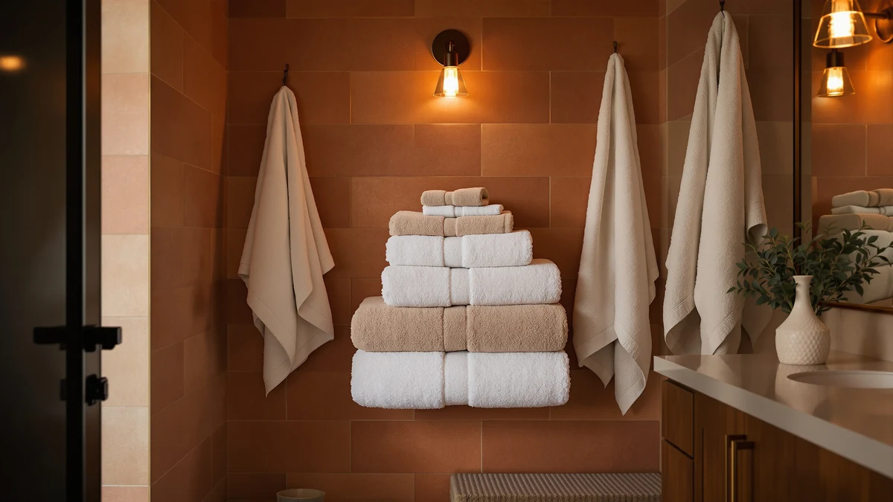

Oversized Bath Towels vs Regular: Which Is Better? (2026)
Prices and picks verified as of September 2026. Independent, reader-supported reviews.


Things to Know Before You Buy
- An oversized bath towel usually measures 35 by 70 inches or larger, while a regular bath towel runs closer to 27 by 52 inches.
- The extra fabric in an oversized towel adds weight and drying time, which matters most in a small or poorly ventilated bathroom.
- Price scales with size and material, so an oversized cotton towel typically costs more per towel than a regular one of the same quality.
- Storage space and towel bar width often decide the winner before softness or brand ever enter the picture.
- Reviewers consistently note that household size and laundry frequency matter as much as personal preference.
The debate over oversized bath towels vs regular sizes comes down to how much fabric you want wrapped around you after a shower, and how much room you have to dry, store, and wash it. An oversized towel like the NALIVO Extra Large Bath Towel covers an adult body from shoulder to shin, while a regular towel like the JML Microfiber Bath Towel covers the torso and dries a lot faster on the bar.
We compared both categories on size, weight, absorbency, drying time, and price using the specs, verified owner reviews, and pricing history behind the products in this guide. Neither size wins outright. Your bathroom's ventilation, your towel bar width, and how many loads of laundry you want to run each week decide which one fits your routine better.
Quick Answer
Oversized bath towels win on coverage and comfort, wrapping your whole body and holding more heat after a shower. Regular bath towels win on speed, cost, and storage, drying faster and stacking flatter in a tight linen closet. Most households land on a mix of both rather than an all-or-nothing choice.
What is Oversized Bath Towels?
An oversized bath towel, sometimes labeled a bath sheet, typically measures 35 by 70 inches or larger, compared with the 27 by 52 inch footprint of a regular towel. That extra fabric, often 300 to 650 grams per square meter depending on the weave, is what lets the towel wrap fully around an adult body rather than covering just the torso and hips.
Brands market oversized towels on comfort and a hotel-style feel. The Bumble Towels Luxury Oversized Bath Towel and the Gold Case Lycia Turkish Beach Towel both fall into this category, built from thicker Turkish cotton that holds more water and more heat against your skin. Owners report that the size makes the biggest difference right after a shower, when a smaller towel forces you to pat down in sections instead of wrapping once and staying warm.
The tradeoff is practical as well as aesthetic. An oversized towel takes up more space on a hook or bar, needs a bigger dryer load, and costs more per unit because it uses more raw material. In the oversized bath towels vs regular comparison, size is the one variable that touches every other factor on this page: price, drying time, and how the towel fits in your bathroom.
What is Regular?
A regular bath towel is the standard size sold in most multi-packs and hotel linen programs, generally 27 by 52 inches. It covers the torso and thighs when wrapped, and most adults use it by patting dry in stages rather than wrapping the whole body at once.
The JML Microfiber Bath Towel and the Bazaar Anatolia Turkish Bath Towel both sit in the regular category, and reviewers often point to their lighter weight as the reason they dry between uses without needing a second towel bar. Regular towels also fit a standard 24-inch towel bar without overhanging, which keeps them from bunching and staying damp at the folds.
Because a regular towel uses less fabric, it costs less to manufacture, ship, and launder. A household running several loads of towels a week feels that difference quickly, both in detergent use and in dryer time. In the oversized bath towels vs regular decision, the regular size is the default for a reason: it works for most bathrooms without asking you to change your storage or laundry habits.
Head-to-Head: Build Quality & Durability
Build quality in the oversized bath towels vs regular comparison tracks fabric weight more than category. A dense 600 GSM cotton weave holds up to repeated washing whether it's cut at 27 by 52 inches or 35 by 70 inches. That said, oversized towels tend to skew toward heavier Turkish or Egyptian cotton because brands market them as a premium product, so the average oversized towel on the market outlasts the average regular towel by a modest margin.
Owners of the Gold Case Lycia Turkish Beach Towel report that the tighter weave resists fraying at the edges even after a year of weekly washing, a trait common to well-made oversized towels. Regular towels made from microfiber, like the JML pick, trade some long-term durability for lower cost and faster drying. Microfiber pills faster than cotton under high heat, so air drying or a low-heat cycle extends its life either way.
Neither size is inherently more durable. The fiber, weave density, and how you wash and dry the towel matter more than whether you bought the oversized or regular version.
Head-to-Head: Price & Value
Price is where oversized bath towels vs regular splits clearly. Among the products in this guide, regular towels like the JML Microfiber Bath Towel run under $20, while oversized options like the Gold Case Lycia Turkish Beach Towel and the Bumble Towels Luxury Oversized Bath Towel land closer to $67 to $70. That gap holds across most brands because oversized towels use 30 to 40 percent more fabric per unit.
Value depends on how you weigh cost per towel against cost per use. A regular towel wears out and gets replaced more often in a busy household, which can close some of the price gap over a few years. An oversized towel costs more upfront but often gets used as a shared or guest towel, which means fewer units in rotation.
For a tight budget or a large household buying towels in bulk, regular sizes stretch further per dollar.
Head-to-Head: Use Experience
Day-to-day, the oversized bath towels vs regular difference is mostly about how you dry off. An oversized towel wraps around your whole body in one motion and holds warmth longer, which reviewers frequently cite as the reason they upgraded. A regular towel requires more patting and repositioning, but it also weighs less on the arm and dries your hands or face without excess bulk.
Drying time favors the smaller towel. A regular bath towel on a well-ventilated bar is usually dry within a few hours, while an oversized towel can stay damp for most of a day in a humid bathroom, which raises the risk of a musty smell if it doesn't get enough airflow between uses. Storage follows the same pattern: regular towels stack flatter in a linen closet, while oversized towels take up noticeably more shelf space.
For travel or a gym bag, a regular towel packs smaller and dries faster between trips, which is why several of the regular-size picks in our database lean toward quick-dry microfiber blends.
When to Choose Oversized Bath Towels
Choose an oversized bath towel if you want full coverage after a shower, live somewhere cold enough that extra warmth matters, or simply prefer a plush, spa-like feel. Taller adults also benefit, since a regular towel can leave more skin exposed on someone over six feet.
Oversized towels also make sense for a primary bathroom with good ventilation, a double towel bar or hook, and a dryer that can handle a bulkier load. If your household already does laundry a few times a week and has the closet space, the extra size adds comfort without adding much friction.
A guest bathroom used occasionally is another good fit, since the towel gets less frequent washing and the slower drying time matters less.
When to Choose Regular
Choose a regular bath towel if you have a small bathroom, limited storage, or a single towel bar that can't handle extra width without bunching. Regular towels also make more sense for kids, since a smaller towel is easier for them to wrap and hang themselves.
If you do laundry often, travel frequently, or share a bathroom with several people who each need their own towel, the lower price and faster drying time of a regular towel add up. A college dorm, an Airbnb rental, or a gym bag are all situations where a regular towel's smaller footprint outweighs the extra coverage of an oversized one.
Budget-conscious households buying towels in bulk also come out ahead with regular sizes, since the per-unit savings scale with every additional towel.
Our Top Picks
These three picks cover both sides of the oversized bath towels vs regular comparison, from a plush upgrade to a budget-friendly regular towel.

Editor’s Pick
NALIVO Extra Large Bath Towel
A full-size oversized cotton towel that wraps a full adult body and holds heat well after a shower.
$47.58
Check Price on Amazon
Best Value
JML Microfiber Bath Towel 2
A regular-size microfiber towel that dries fast and costs less, a solid pick if you want the standard size done well.
$19.99
Check Price on Amazon
Premium Choice
Luxury Oversized Bath Towels |
A heavier oversized towel built for a spa-style feel, best for a bathroom with room to dry and store the extra fabric.
$66.99
Check Price on AmazonWhat size makes a towel oversized instead of regular?
Most brands label a towel oversized once it passes 35 by 70 inches.
Do oversized bath towels take longer to dry than regular towels?
Yes.
Frequently Asked Questions
What size makes a towel oversized instead of regular?
Do oversized bath towels take longer to dry than regular towels?
Are oversized bath towels worth the extra cost?
Will an oversized bath towel fit on a standard towel bar?
Which is better for a small bathroom, oversized or regular towels?
Final Verdict
The oversized bath towels vs regular choice comes down to your bathroom, not a universal winner. If you want full coverage and a plush, warm wrap, the NALIVO Extra Large Bath Towel delivers that in the oversized category. If you'd rather dry faster and spend less, the JML Microfiber Bath Towel handles the regular side of the comparison well. Many households end up buying both and using each where it fits best.